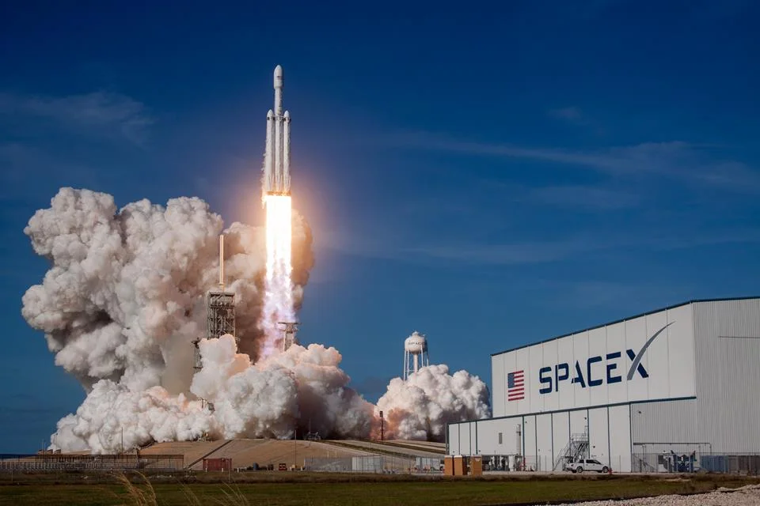

Inicio
Antes de iniciar a sua correria, Lembre-se:cada novo começo é uma oportunidade para ser a melhor versão de si mesmo.

"Faça e refaça sempre" Quintoou🍻
Ciência🪐
NASA Prórroga Lançamento da Missão da SpaceX
Novos Desafios à Vista
Lembra da nossa edição do dia 05/08/2024? Onde falamos sobre os Astronautas que estão presos no espaço a mais de 2 meses? Então...
A NASA anunciou o adiamento da missão da SpaceX, que estava programada para levar astronautas à Estação Espacial Internacional (ISS). O atraso se deve a questões técnicas que precisam ser resolvidas antes do lançamento. Enquanto isso, a espaçonave CST-100 Starliner da Boeing continua em sua missão no espaço, após um voo de teste bem-sucedido que visa validar sua capacidade de transportar astronautas.
A decisão de adiar a missão da SpaceX destaca os desafios enfrentados pelas empresas de exploração espacial, mesmo em um momento em que a colaboração entre a NASA e empresas privadas se intensifica. A Starliner da Boeing, que está em órbita desde sua decolagem, representa um passo importante para a empresa, que busca demonstrar a segurança e a eficácia de sua espaçonave.
A NASA não forneceu uma nova data para o lançamento da SpaceX, mas enfatizou a importância de garantir que todos os sistemas estejam operacionais antes de prosseguir. A situação ressalta a complexidade das missões espaciais e a necessidade de rigorosos padrões de segurança.
Bolsa de Valores📈
Bolsa e Dólar: Movimentações do Mercado
Após dois dias consecutivos de queda, o dólar iniciou esta quinta-feira em alta, mas logo passou a cair, registrando uma baixa de 0,18%, sendo cotado a R$ 5,616. O dólar turismo estava cotado a R$ 5,842. A Bolsa de Valores de São Paulo (Bovespa) também apresentou alta de 0,66%, alcançando 128.358,13 pontos.
Os dados mais recentes de auxílio-desemprego nos Estados Unidos trouxeram alívio ao mercado, com 233 mil pedidos iniciais, abaixo da estimativa de 240 mil. Isso sugere que a economia americana pode não estar se deteriorando tanto quanto se temia, embora o número de pessoas recebendo seguro-desemprego ainda seja alto, totalizando 1,875 milhão.
Especialistas do mercado destacam que as oscilações na Bolsa e no câmbio devem continuar frequentes devido às preocupações econômicas, conflitos geopolíticos e as eleições iminentes em novembro. O presidente do Banco Central, Roberto Campos Neto, participou de eventos em São Paulo, destacando o crescimento do mercado de crédito.
Além disso, a Petrobras divulgará hoje, após o fechamento do mercado, os resultados do segundo trimestre de 2024, os primeiros sob a gestão da nova presidente, Magda Chambriard. O mercado espera números levemente maiores.
Esses eventos refletem a volatilidade e as incertezas que continuam a influenciar os mercados financeiros, exigindo atenção constante dos investidores.
Tecnologia👨💻
Nova tecnologia de carregamento para smartohone?🤔
A Realme está prestes a revolucionar o mercado de smartphones com sua nova tecnologia de carregamento rápido de 300W. A empresa confirmou que a revelação oficial ocorrerá em um evento na China no dia 14 de agosto de 2024. Esta tecnologia promete carregar um smartphone de 0% a 100% em aproximadamente 5 minutos.
Atualmente, o Realme GT 3 detém o recorde de maior potência de recarga em um smartphone, com 240W, permitindo uma carga completa em menos de 10 minutos. A nova tecnologia de 300W da Realme supera essa marca, estabelecendo um novo padrão na indústria de smartphones.
A expectativa é alta para ver se a Realme lançará um smartphone com suporte total a essa tecnologia inovadora ou se será apenas uma demonstração do que é possível alcançar com essa potência de carregamento. De qualquer forma, a Realme continua a se posicionar como uma das líderes em inovação tecnológica no mercado de dispositivos móveis.
Política💬
Góias é Considerado o Estado mais Digital do Brasil
Goiás foi reconhecido como o estado mais digital do Brasil, conforme a Associação Brasileira de Entidades Estaduais de Tecnologia da Informação e Comunicação (Abep-TIC). O estado conquistou o primeiro lugar no Índice ABEP-TIC de Oferta de Serviços Públicos Digitais, superando estados como Rio de Janeiro, Piauí, Rio Grande do Sul e Bahia.
Atualmente, Goiás oferece quase 700 serviços digitais, permitindo que os cidadãos acessem operações do Detran, serviços do Vapt-Vupt e a emissão de guias pela Secretaria da Economia, entre outros, sem a necessidade de comparecer a órgãos públicos. O secretário-geral de Governo, Adriano da Rocha Lima, destacou que essa digitalização facilita o acesso a serviços a qualquer hora, promovendo maior comodidade para a população.
A avaliação para o prêmio incluiu auditorias rigorosas que analisaram tanto a qualidade dos serviços digitais quanto a eficiência dos sistemas internos do governo. Além dos benefícios práticos, o reconhecimento como estado mais digital pode facilitar a obtenção de empréstimos para investimentos em tecnologia, conforme ressaltou o secretário.
Goiás planeja expandir seus projetos de cidades inteligentes, focando em áreas como mobilidade urbana, segurança pública e sustentabilidade, utilizando tecnologia para tornar as cidades mais digitais e integradas.
A conquista de Goiás como o estado mais digital do Brasil reflete um avanço significativo na oferta de serviços públicos digitais, promovendo eficiência e acessibilidade, além de abrir novas oportunidades para investimentos em tecnologia no estado.
Extra:
A quinta-feira um dia perfeito para dar uma pausa na rotina e aproveitar a véspera de sexta-feira. Para te ajudar a aproveitar ao máximo esse dia, separamos algumas dicas:
- Banho relaxante🛁: Crie um ambiente calmo com velas e música suave, e mergulhe em uma banheira com sais de banho.
- Leitura de um bom livro📚: Perca-se em uma história e deixe a imaginação fluir.
- Marque um jantar com amigos🍻: Compartilhe momentos agradáveis e fortaleça seus relacionamentos.
- Música relaxante🧘♂️: Crie uma playlist com suas músicas favoritas e relaxe.
- Participe de um grupo de interesses🏂: Conecte-se com pessoas que compartilham seus hobbies.
- Faça uma videochamada com familiares🤳: Mantenha contato com quem você ama, mesmo à distância.❤️
E o mais importante de tudo🤗: